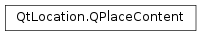

QPlaceContent¶
Inherited by: QPlaceEditorial, QPlaceImage, QPlaceReview
Synopsis¶
Functions¶
- def
__eq__(other) - def
__ne__(other) - def
attribution() - def
setAttribution(attribution) - def
setSupplier(supplier) - def
setUser(user) - def
supplier() - def
user()
Detailed Description¶
The
PySide2.QtLocation.QPlaceContentclass serves as the base class for rich content types.Rich content such as
images,reviewsandeditorialsinherit from thePySide2.QtLocation.QPlaceContentclass which contains common properties such as an attribution string and content contributor, which may take the form of auserand/orsupplier. It is possible that a user from a supplier is contributing content, hence both fields could be filled in simultaneously.Note
Some providers may require that the attribution string be displayed to the user whenever a piece of content is viewed.
Conversion between
PySide2.QtLocation.QPlaceContentand it’s subclasses can be easily performed without casting. Due to the way it has been implemented, object slicing is not an issue, the following code is valid:QPlaceImage image; image.setUrl(QUrl("www.example.com")); QPlaceContent content = image; QPlaceImage image2; image2 = content; qDebug() << image2.url(); //image2.url() == "www.example.com"The rich content of a place is typically made available as paginated items. The ability to convert between
PySide2.QtLocation.QPlaceContentand it’s subclasses means that code which handles the mechanics of paging can be easily shared for each of the sub types.At present the
PySide2.QtLocation.QPlaceContentclass is not extensible by 3rd parties.Note: The Places API considers content objects to be ‘retrieve-only’ objects. Submission of content to a provider is not a supported use case.
-
class
PySide2.QtLocation.QPlaceContent¶ -
class
PySide2.QtLocation.QPlaceContent(other) Parameters: other – PySide2.QtLocation.QPlaceContentConstructs an default content object which has no type.
Constructs a new copy of
other.
-
PySide2.QtLocation.QPlaceContent.attribution()¶ Return type: unicode Returns a rich text attribution string.
Note : Some providers may require that the attribution of a particular content item always be displayed when the content item is shown.
-
PySide2.QtLocation.QPlaceContent.__ne__(other)¶ Parameters: other – PySide2.QtLocation.QPlaceContentReturn type: PySide2.QtCore.boolReturns true if this content object is not equivalent to
other, otherwise returns false.
-
PySide2.QtLocation.QPlaceContent.__eq__(other)¶ Parameters: other – PySide2.QtLocation.QPlaceContentReturn type: PySide2.QtCore.boolReturns true if this content object is equivalent to
other, otherwise returns false.
-
PySide2.QtLocation.QPlaceContent.setAttribution(attribution)¶ Parameters: attribution – unicode Sets a rich text
attributionstring for this content item.
-
PySide2.QtLocation.QPlaceContent.setSupplier(supplier)¶ Parameters: supplier – PySide2.QtLocation.QPlaceSupplierSets the
supplierof the content.
-
PySide2.QtLocation.QPlaceContent.setUser(user)¶ Parameters: user – PySide2.QtLocation.QPlaceUserSets the
userwho contributed this content.
-
PySide2.QtLocation.QPlaceContent.supplier()¶ Return type: PySide2.QtLocation.QPlaceSupplierReturns the supplier who contributed this content.
-
PySide2.QtLocation.QPlaceContent.user()¶ Return type: PySide2.QtLocation.QPlaceUserReturns the user who contributed this content.
© 2018 The Qt Company Ltd. Documentation contributions included herein are the copyrights of their respective owners. The documentation provided herein is licensed under the terms of the GNU Free Documentation License version 1.3 as published by the Free Software Foundation. Qt and respective logos are trademarks of The Qt Company Ltd. in Finland and/or other countries worldwide. All other trademarks are property of their respective owners.